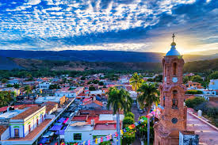
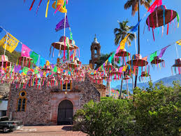
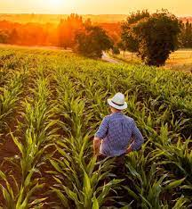

Amatlán de Cañas es un municipio enclavado en la Sierra Madre Occidental, al sur del estado de Nayarit, México. Limita con los municipios de Ahuacatlán, Ixtlán del Río y con el estado de Jalisco. Su territorio es montañoso, con numerosos arroyos y paisajes naturales.
Una de las fiestas más importantes del municipio es en honor a San Pedro y San Pablo, celebrada el 29 de junio. Esta festividad incluye procesiones religiosas, danzas tradicionales, música en vivo, pirotecnia y ferias populares. También se celebran fiestas patronales en las comunidades cercanas.
La economía del municipio se basa principalmente en la agricultura, la ganadería y la producción artesanal. Se cultivan productos como maíz, frijol, caña de azúcar y chile. También se cría ganado bovino, porcino y aves de corral. Además, se elaboran artesanías de barro, textiles y productos de palma.
